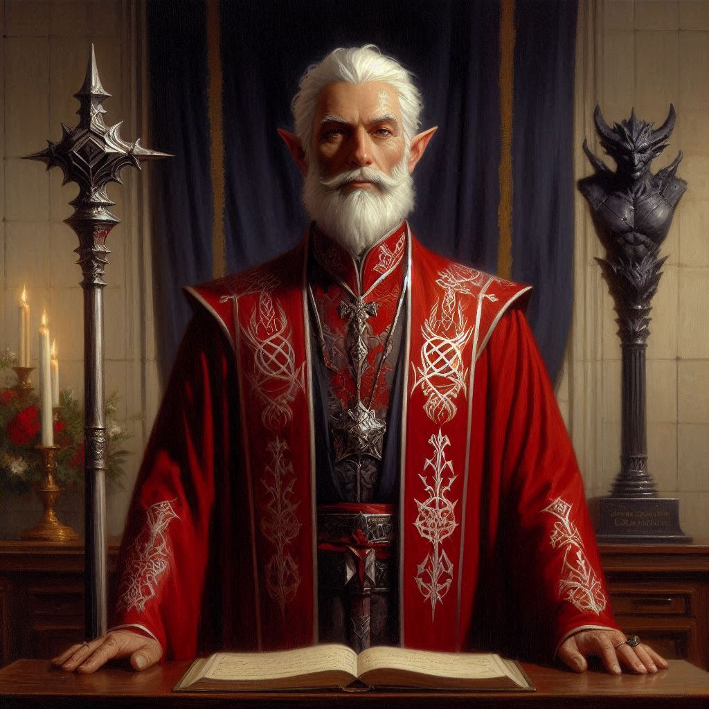

The Black Crystal
You and Elias stand outside the grand entrance of the Minister of Trade’s manor, the air tense with anticipation. The sprawling estate looms before you, a fortress of wealth and power that feels worlds apart from Belladonna Township. You smooth your cloak, your heart pounding beneath it, as you prepare to face a man you’ve only heard whispers about—dangerous whispers. Elias stands beside you, his hand resting on the hilt of his sword, but you can sense his unease.
“We have to stick to the plan,” he murmurs. “Convince him we’re here on official business.”
You nod, though you know it won’t be easy. The Minister of Trade is no fool, and if he catches even the slightest hint of your true intentions, things could go south quickly. But you don’t have a choice. The black crystal shard you’ve heard rumors about—the same shard tied to Hemlock Caverns and Jorsh’s dark power—has to be here. And you need answers.
You step forward, pushing open the heavy iron doors, and the two of you walk into the grand foyer. A servant greets you, and after a few moments of tension-filled waiting, you’re led into the Minister’s private study. It’s an opulent room, filled with rich tapestries, shelves of ancient tomes, and a desk carved from dark, gleaming wood. But your eyes are immediately drawn to the centerpiece on the far wall—a pedestal with a black crystal shard. It pulses faintly, as if alive, casting an eerie glow across the room.
The Minister himself stands at the window, his back to you. His silhouette is tall and imposing, and though you can’t see his face, you feel his presence like a weight in the room.
“Emissaries of the Magistrate of Belladonna, are you?” the Minister’s voice is smooth, calculated, with a hint of amusement that sets you on edge. “To what do I owe this... visit?”
Elias steps forward first, his tone steady. “We’ve been sent to discuss recent... developments involving trade routes near Hemlock Caverns. The Magistrate believes you may have information that could assist us in ensuring the security of Belladonna’s interests.”
The Minister finally turns to face you, his dark eyes flicking between you and Elias, lingering on you for just a moment longer. There’s something unnerving about his gaze, something that tells you he already knows more than you’d like.
“I see,” he says slowly, his lips curling into a thin smile. “Trade routes, you say?”
You force yourself to maintain composure, stepping forward to stand beside Elias. “Yes, Minister. There have been... strange occurrences near the caverns. We were hoping you might shed some light on them.”
The Minister’s smile widens, but it’s not a pleasant expression. It’s the smile of someone who knows a secret and delights in keeping it from you. “Oh, I’m sure you’re very concerned about the trade routes. And not at all interested in... other matters.”
His eyes dart to the black crystal shard behind him, and in that instant, you know the ruse is up. He knows why you’re really here.
Elias senses it too, his hand tightening around the hilt of his sword. “We’re not here for games, Minister.”
“Of course not,” the Minister says, his voice dropping to a dangerous whisper. “But you’re playing one all the same.”
Without warning, the Minister raises his hand, and a wave of dark energy surges toward you both. Elias shouts, pulling you back just in time as the energy blasts through the space where you were standing, shattering a nearby bookshelf into splinters. You roll to your feet, your sword already drawn.
The Minister laughs, dark and twisted. “You thought you could deceive me? Do you have any idea the power I command?”
His hand moves again, and this time, shadows rise from the corners of the room, twisting and writhing like living things, charged with dark magic. The black crystal shard pulses brighter, feeding the darkness around you.
You raise your sword, heart pounding. “Elias, get ready!”
But the Minister’s power is overwhelming. Another blast of magic shoots toward you, and though you manage to deflect part of it with your blade, the force sends you staggering back. Elias charges forward, swinging his sword at the Minister, but he’s met with a wall of dark energy that slams him to the ground.

“No!” you cry out, rushing to his side as he struggles to rise. Blood trickles down his temple, and he’s breathing hard, clearly injured.
The Minister looms over you both, his eyes glowing with malevolent glee. “You’ve meddled in things far beyond your comprehension, little ranger. You cannot stop me. Not here. Not with the power I possess.”
Your eyes flicker to the black crystal shard behind him. It’s the source of his strength, the dark magic that fuels him. If you could destroy it, maybe—just maybe—you could weaken him enough to defeat him. But at what cost? You don’t know what will happen if you break the shard. The magic it holds could be too powerful, too unpredictable.
And then there’s Elias. He’s struggling to stand, but he’s vulnerable. Another hit from the Minister’s dark magic could kill him. You can’t let that happen.
The Minister raises his hand once more, preparing for another strike. Time is running out, and the fate of Elias—and possibly much more—rests on your decision.